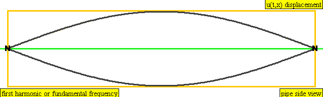
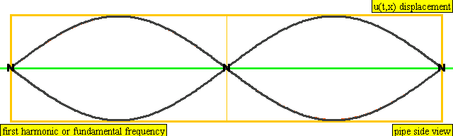
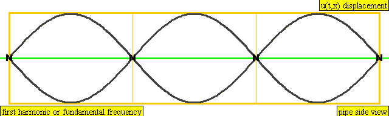

A medium is a material that can propagate a wave. The speed of the wave is determined by two properties of the medium: a force-like property and a mass-like property. For example, the speed of sound through a gas is determined by the bulk modulus of the gas and its density. For a solid such as a copper rod, the force-like property is the stress and the mass-like quantity is still the density.
For the coiled spring in this experiment, the force-like property is the tension in the coil and the mass-like quantity is the mass per unit length:
Equation 1:
In all cases, the speed of the wave is the square root on the force-like property divided by the mass-like property. For a spring,
Equation 2:
A standing wave pattern is the result of two or more waves of the same wavelength and frequency traveling in opposite directions, usually resulting from reflection off a barrier. Only specific wavelengths can result in standing waves: acceptable wavelengths are determined from the length of the medium supporting the standing wave, L, and the nature of the reflecting surface. For standing waves in a spring with two fixed ends, the relationship is
Equation 3:
Since the speed, frequency and wavelength are related to each other by the wave equation:
Equation 4:
the allowed frequencies are
Equation 5:
where
Equation 6:
A partner is helpful for holding one end of the spring; however, a piece of string may be used to tie one end of the coil to a sturdy support, such as a table leg. Data collection is also more accurate if the two people are standing up and the SlinkyTM is vibrating freely in the air.
Extend the spring so that the total distance from one end to the other is 3.0 meters. The mass of a standard metal SlinkyTM has already been measured to be close to 150 grams, but a spring scale can be used to confirm the value by hanging the spring from it to find its weight.
Attach the spring scale to one end of the SlinkyTM to measure the tension in the coil when stretched 3.0 meters. Record the tension on the Report Sheet.
Begin shaking the spring up and down (or back and forth if on the ground) at a frequency that results in the first harmonic. Find the frequency of the standing wave by measuring the time it takes to complete 20 complete oscillations. (The frequency, f = 20/total time.)

Example 1: An animation of the first harmonic for a system with fixed ends.
Repeat this procedure for the second and third harmonics. You will discover that you must shake the spring faster for each successive harmonic. Also, the person at the other end of the spring should keep their hand still, and you should try to make the vibrations by keeping your arm still and just flexing your wrist.

Example 2: An animation of the second harmonic for a system with fixed ends.

Example 3: An animation of the third harmonic for a system with fixed ends.
Use equation (1) to calculate the mass per unit length for the spring. Mass should be measured in kilograms and length in meters.
Use equation (2) to calculate the theoretical speed of the waves in the spring.
Use equation (3) to determine the standing wavelength for each of the three trials and record the results in the data table.
Use equation (4) to calculate the speed of the wave for each harmonic from the wave equation.
Answer the following questions on the Report Sheet.
Submit your completed report sheet to the Lesson 8 Lab: Standing Waves assignment folder.
Note: your lab Report Sheet should be completed by hand. You will need to scan and upload the completed document as a PDF to the assignment folder.